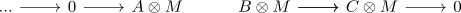

tor functor for a flat module
Proposition
Let $R$ be a ring and $M$ an \(R\)-module
TFAE:
- $\mathrm{Tor}_n(M,-) = 0$ for $n \geq 1$
- $\mathrm{Tor}_1(M,-) = 0$
- $M$ is flat
Proof
1) $\implies$ 2)
special case
2) $\implies$ 3)
follows from the long exact sequence of a derived functor showing that for


3) $\implies$ 1)
corollary of